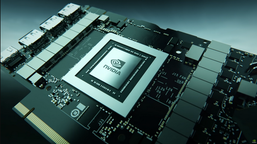
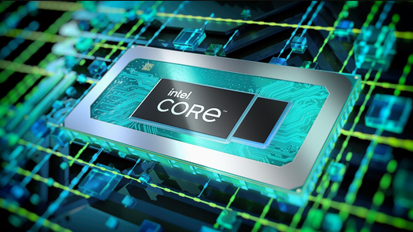

Graphics Processing Units (GPUs):

Graphics Processing Units (GPUs) are specialized electronic circuits designed to accelerate the processing of images and video. Originally developed to render complex graphics in real-time for gaming, GPUs are now also widely used in various computational fields. Their highly parallel structure makes them efficient for tasks involving large blocks of data processed simultaneously, such as scientific simulations, machine learning, and artificial intelligence.
- Performance: GPUs excel at parallel processing, making them ideal for handling complex calculations simultaneously. They significantly boost performance in graphics-intensive applications.
- Gaming: Gamers rely on GPUs to render lifelike graphics, smooth animations, and realistic lighting effects. High-end GPUs allow for 4K gaming experiences.
- Deep Learning: GPUs accelerate training of neural networks, enabling breakthroughs in artificial intelligence and machine learning.
central processing units (CPUs):

Certainly! Let’s discuss central processing units (CPUs) without using bullet points. A CPU is one of the most crucial components in any computer system. Often referred to as “a computer’s brain,” it processes and executes commands, playing a significant role in a device’s speed and efficiency1. Here are some key points about CPUs:
- Function: The CPU is responsible for executing instructions and processing data. It performs arithmetic and logical operations, manages memory, and coordinates communication between various components.
- Clock Speed: Measured in gigahertz (GHz), the clock speed determines how quickly the CPU can process instructions.
- Multithreading: Some CPUs support multithreading, allowing them to handle multiple tasks simultaneously.